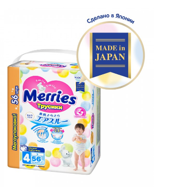

Интернет-магазин детских товаров
Игрушки
Merries Трусики-подгузники L (9-14 кг) 56 шт.

Детские подгузники трусики для активных малышей. Сделано в Японии
Описание товара
Merries Трусики-подгузники L (9-14 кг) 56 шт. идеально подойдут малышу, который начинает активно двигаться. Даже если малыш очень активный, трусики-подгузники Merries надежно защищают от протеканий и опрелостей, обеспечивая необходимый комфорт и свободу движений!
Крой трусиков Merries разработан с учетом анатомических особенностей малыша:
Хорошо сидят на талии и не сползают, но при этом не жмут и не оставляют следов на нежной коже малыша
Отлично облегают попку, сохраняют форму и заботятся о комфорте малыша, даже когда трусики уже наполнены
Комфортно садятся в паховой области и не создают дискомфорта между ножек
Нежно облегают ножки, не образуют щелей и защищая от протекания
Merries заботится о коже вашего ребенка!
"Дышащая" поверхность вокруг талии отлично выводит испарения, и кожа малыша остается сухой
Испарения в области пояса уходят вверх через воздушные каналы между резинкой и кожей
"Дышащий" внешний слой. Вся поверхность подгузника изготовлена из воздухопроницаемого материала, который надежно удерживает влагу, но выводит испарения по всей поверхности, оставляя попку сухой
Надежный впитывающий внутренний слой. Благодаря блочной структуре впитывающего слоя трусики впитывают большой объем жидкости, не увеличиваясь значительно в размерах и не мешая движениям малыша
Мягкий эластичный пояс не давит на животик и не оставляет следов.
Воздушный и шелковистый внутренний слой понравится даже самой нежной коже.
Мягкая поверхность приятна на ощупь и защищает кожу от натирания
Мягкий боковой шов не натирает и не жмет
Инновационный ультразвуковой метод соединения боковых швов делает шов более мягким, а разрывать его теперь ещё легче
Оборочки вокруг ножек предотвращают протекание
Плотно облегают ножки и отлично держатся даже на подвижном ребенке
Индикатор наполнения. Если две центральные полоски индикатора окрасились в голубой цвет — значит, пора менять трусики
Лента для утилизации. Удобно свернуть в трубочку и закрепить использованные трусики лентой для утилизации
Симпатичный дизайн с зайкой Merries подарит малышу хорошее настроение.
Подходит для мальчиков и девочек. Впитывающий слой располагается по всей поверхности трусиков-подгузников, поэтому трусики подходят и мальчикам, и девочкам
Как снять использованные трусики-подгузники?
Разорвите боковые стороны и снимите трусики-подгузники. Скрутите трусики в трубочку, закрепите лентой для утилизации, расположенной на задней стороне трусиков, и выбросите их в мусорное ведро.
Как менять трусики-подгузники? Когда ваш ребенок лежит на спине, вставьте руки в отверстия трусиков- подгузников снизу и проденьте по очереди ножки. Натяните пояс трусиков выше пупочка ребенка. Просто надевать, даже когда ребенок постоянно крутится. Также удобно подтянуть пояс трусиков выше пупочка в момент, когда малыш пытается встать, опираясь на вас Когда ваш малыш стоит, вденьте сначала одну ножку, а затем другую и натяните пояс трусиков выше пупочка.
Когда подгузник надет, расправьте пальцами складки внутреннего слоя вокруг бедер. Они должны плотно и без зазоров прилегать к телу.
Хранение:
Подгузники нельзя хранить в условиях повышенной влажности, рядом с нагревательными приборами и под прямыми солнечными лучами, т.к. индикатор накопления мочи может изменить цвет
Не храните подгузник рядом со стиральными порошками, машинным маслом и прочими сильно пахнущими веществами, так как подгузники даже в закрытой упаковке могут пропитаться посторонним запахом
Не храните подгузники вблизи открытого огня, потому что это может привести к деформации и выцветанию подгузника
Подгузники рекомендуется хранить при температуре от -20 ?С до +28 ?С.
Если вы случайно постирали использованный подгузник с вещами, то после отжима стряхните оставшиеся на одежде гелеобразные частицы. Выньте все вещи из стиральной машины и аккуратно протрите барабан
Если состояние кожи вашего малыша ухудшается и появляется раздражение, то прекратите использовать подгузники и обратитесь к врачу
Характеристики товара
-
Вес (кг)
2.22
-
Страна изготовления
Япония
-
Материал
нетканый полиолефин, полиолефин-нетканый полиэстер, распушенная целлюлоза, бумага, полимер-суперабсорбент, полиолефиновая пленка, полиуретан, термоклей
-
Вес в упаковке (кг)
2.35
-
Количество грузовых мест
1
-
Длина упаковки (см)
29.8
-
Ширина упаковки (см)
39.6
-
Высота упаковки (см)
16
-
Тип
подгузники-трусики
-
Пол
для мальчика, для девочки
-
Размер
L
-
Вес ребенка (кг)
9 - 15
-
Количество в упаковке (шт.)
56
-
Размер пачки
средняя